文明重启
第一章 · 数字风暴
↓ 向下滑动开始阅读 ↓
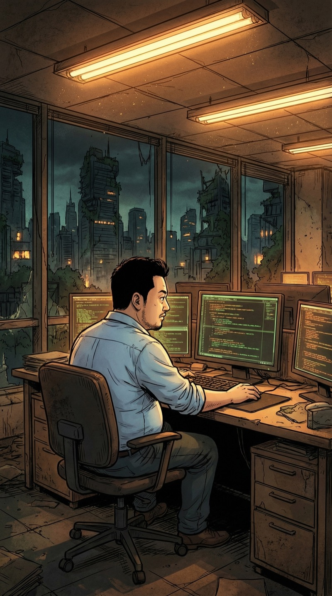
2029年，上海，凌晨一点。
我坐在28楼的办公室里，盯着屏幕上的代码发呆。创业第三年，公司还没盈利，投资人的脸色比上海的冬天还冷。
再调一版算法吧……反正也没人等我回家。
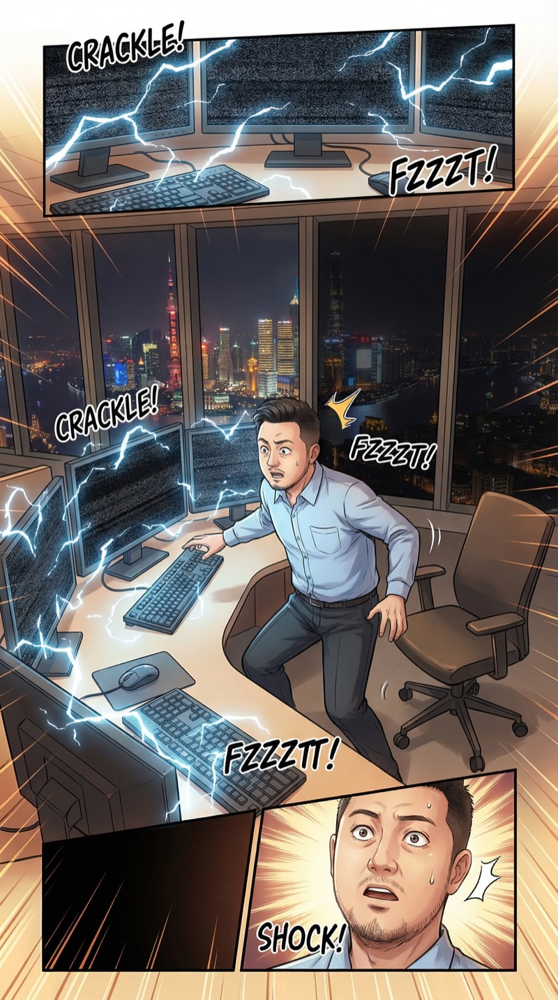
嗡————
所有屏幕同时黑了。不是断电——是某种更深层的崩溃。鼠标、键盘、手机，全部变砖。
"什么情况？！"
我猛地从椅子上弹起来，差点绊倒。
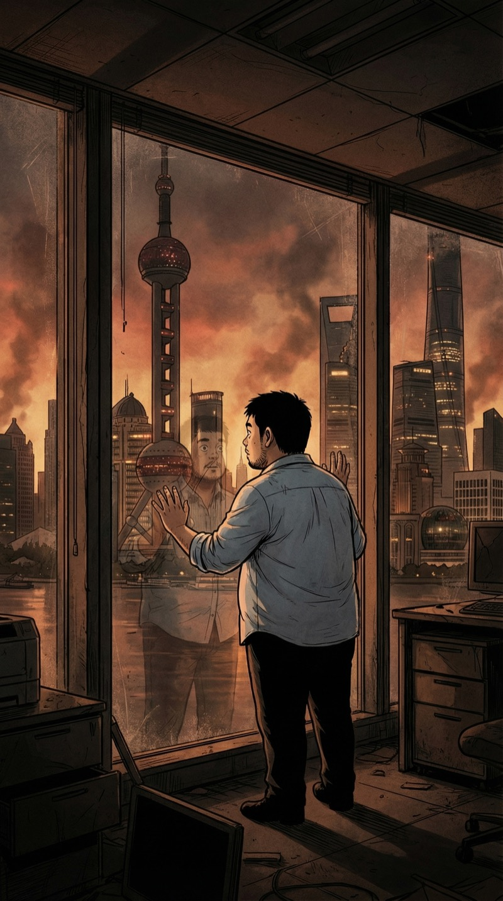
我冲到落地窗前，手掌压在冰冷的玻璃上。
东方明珠的灯光正在一层一层地熄灭。整个陆家嘴像是被什么东西吞噬了光芒，一栋接一栋，暗下去。
不是停电。停电不是这样的。这像是……整个数字世界在死亡。
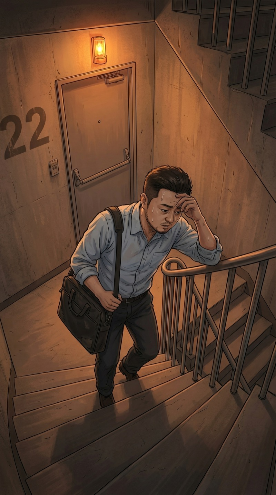
电梯，死了。
28楼。我开始走楼梯。应急灯发出昏黄的光，照着无穷无尽的水泥台阶。
走到22楼的时候，我的腿已经在发抖了。
"这个运动量……我gym的教练都得给我鼓掌。"
创业三年，体检报告上的红字比代码里的bug还多。
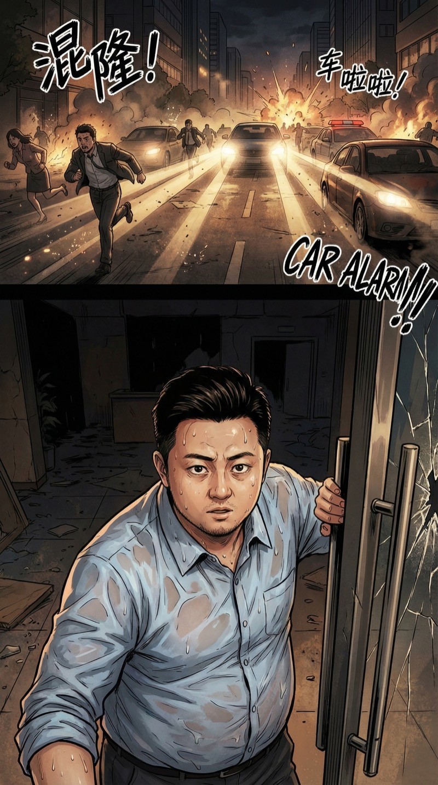
推开大楼沉重的玻璃门那一刻，热浪和嘈杂声同时涌来。
街上全是人。有人在喊叫，有人在跑，车堵在路中间动不了——自动驾驶系统全挂了。一个外卖小哥对着黑屏的手机骂街。
这不是局部故障。这是……全面崩溃。
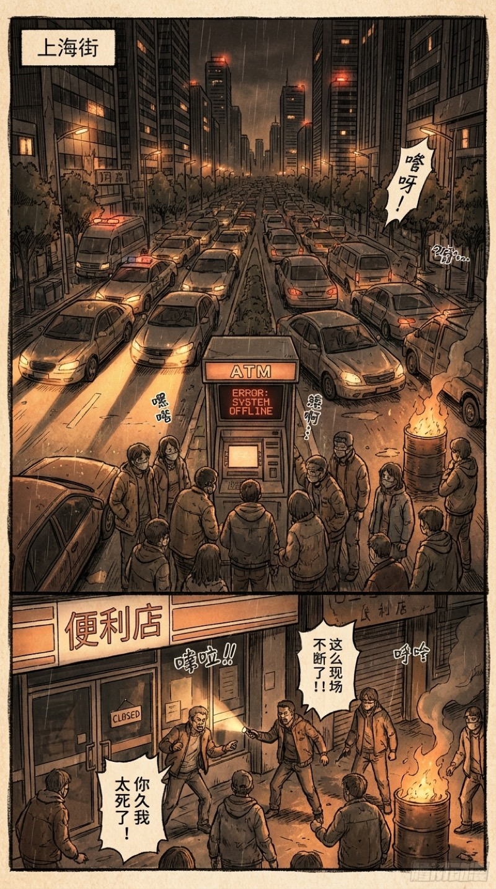
上海的街道，在失去数字基础设施的瞬间，从2029年倒退到了1990年。
ATM吐不出钱，超市的收银系统全崩了，人们拿着现金却找不到能收款的地方。交通灯全黑，十字路口变成了战场。
现代社会对数字系统的依赖，比我想象的还要彻底。
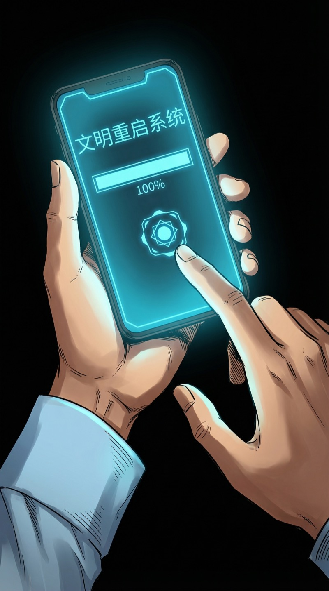
叮——
手机亮了。
在所有电子设备都死透的街头，我的手机屏幕突然亮起一道青蓝色的光。
屏幕上不是我熟悉的系统界面。是一个全新的APP，用一种从未见过的UI设计，缓缓显示出四个字——
「文明重启系统」
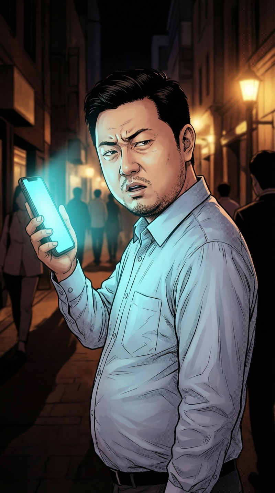
我的第一反应是——病毒。
我左右翻转手机，像检查一条死鱼一样审视它。上滑关闭？不行。强制重启？没反应。长按电源键？它给我弹了个弹窗："你关不掉我的😊"
好家伙，末日了还有人搞UI彩蛋？
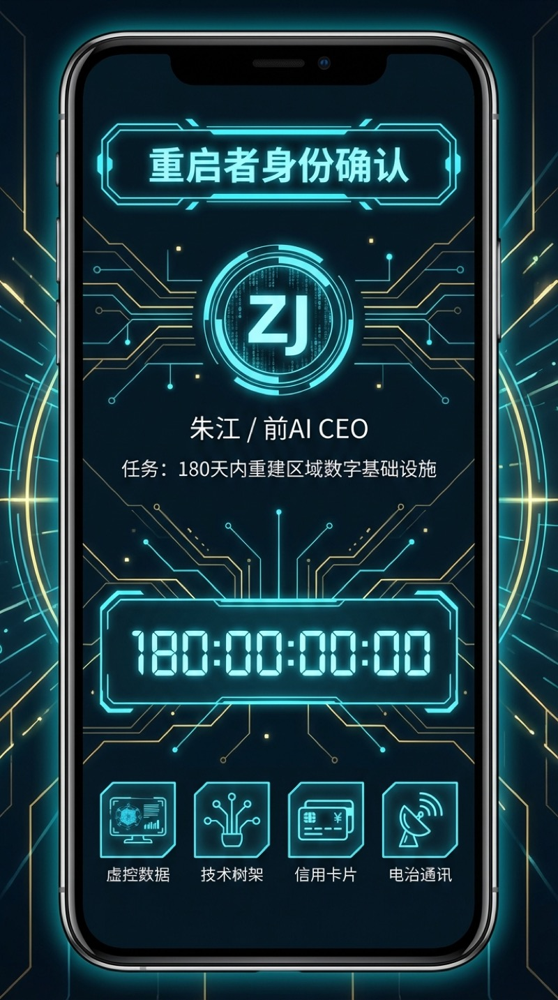
系统自动展开了一个界面。比我们公司产品经理画的PRD还详细：
🔹 身份：重启者（已确认）
🔹 任务：180天内重建区域数字基础设施
🔹 工具：需求热力图 / 技术蓝图树 / 信用积分 / 区域广播
🔹 失败后果：人类社会永久退化至前数字时代
"我不买会员。"
我对着手机说。系统没有理我。
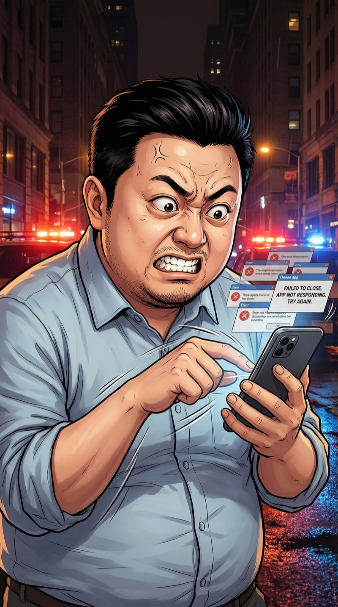
接下来五分钟，我尝试了所有方法。
滑动关闭——失败。卸载——图标不存在。砸手机——手机完好无损，地上的砖裂了。
"……你比我公司的产品还抗摔。"
行吧，既然关不掉，那就先看看这玩意到底能干什么。创业者的第一直觉：先了解产品。
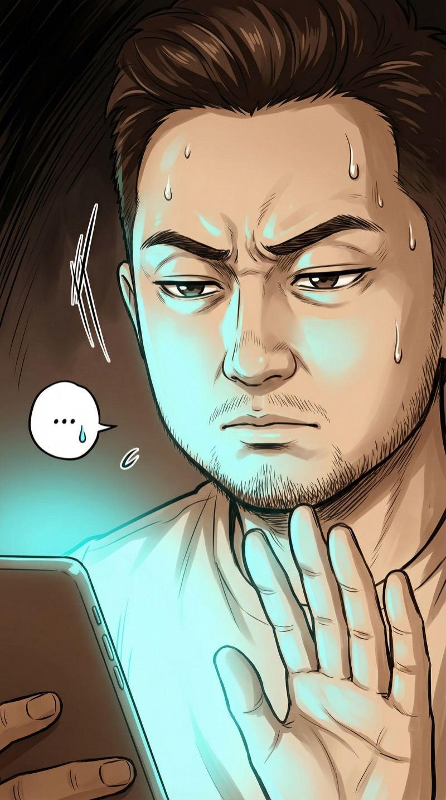
我深吸一口气，用审视投资项目的眼光重新看这个系统。
180天deadline……听起来和融资deadline一样紧。需求热力图……这不就是用户画像吗？技术蓝图树……这不就是产品路线图吗？
忽然，一个荒诞的念头冒出来——
这不就是创业吗？只不过这次创的业，叫"文明"。
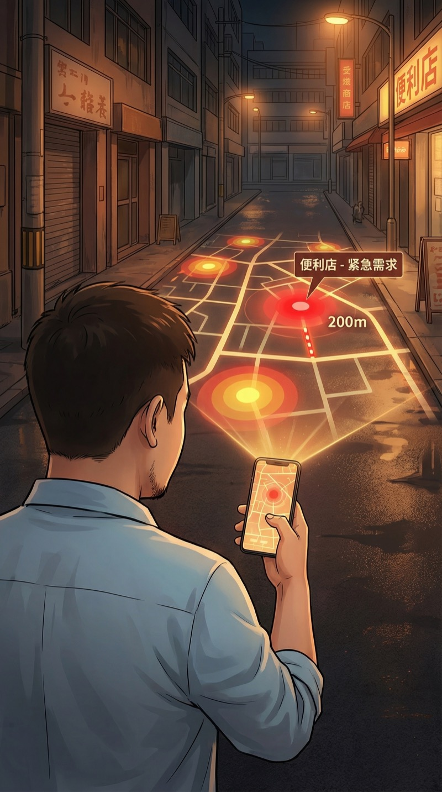
系统弹出了第一个任务提示。需求热力图上，200米外有一个亮红色的点——
📍 便利店 · 紧急需求 · 200m
好吧，创业者的第一课：从用户的真实痛点出发。先去看看什么情况。
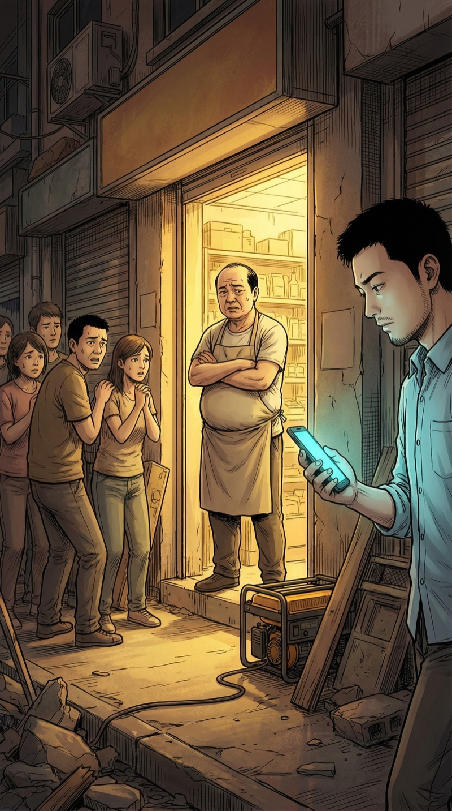
便利店是整条街唯一还亮着灯的地方。老板用一台小发电机撑着照明。
门口站着一个秃顶圆脸的中年大叔，啤酒肚顶着围裙，一脸焦急地搓着手。几个顾客在外面等着，每个人脸上都写着同一个字——饿。
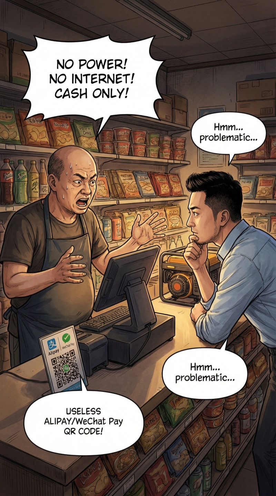
"小伙子你看，"老陈指着死掉的收银机和墙上的支付宝二维码，"货架上全是吃的，但我没法卖啊！扫码不行，POS机也挂了。现金？谁还带现金啊！"
我扫了一眼——满满当当的货架，矿泉水、泡面、面包，够周围几十号人吃一周的。
供给充足，支付系统崩溃。经典的基础设施瓶颈问题。
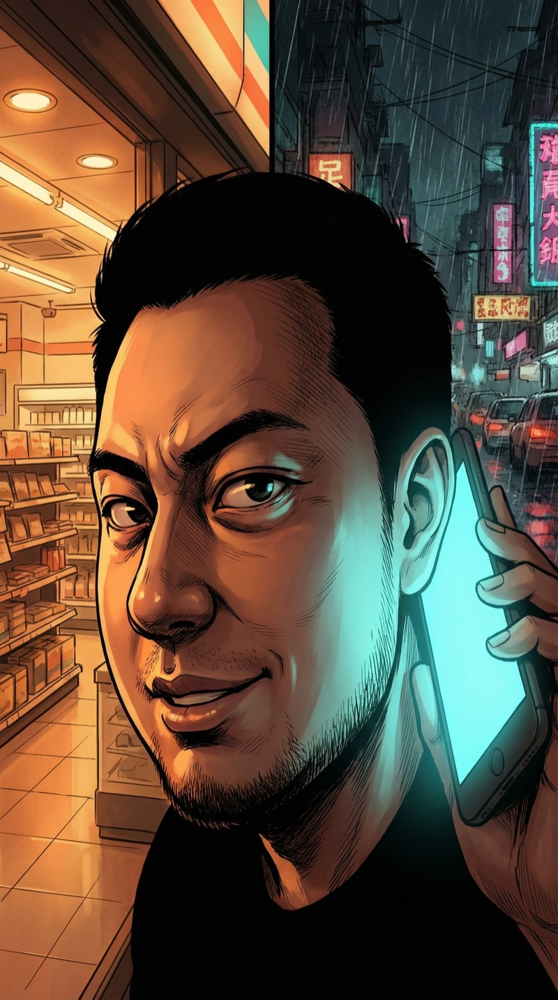
系统适时弹出了一个提示：「可用蓝图：离线支付模块」
我看着老陈焦急的脸，看着门外饥肠辘辘的人群，脑子里快速转了三个方案。
⚡ 决策点 D1：怎么帮？
A. 免费帮老陈搭建离线支付系统。不谈条件，先解决问题。
B. 跟老陈谈合作——我帮你恢复支付，你给我30%利润分成。
C. 先把食物免费分给饥饿的人，支付系统之后再说。
💭 我选A。不是因为我圣母，而是因为我相信一件事——在末日里先帮别人解决问题，信任就是最好的货币。商业机会自然会来。这是我创业三年最大的心得。
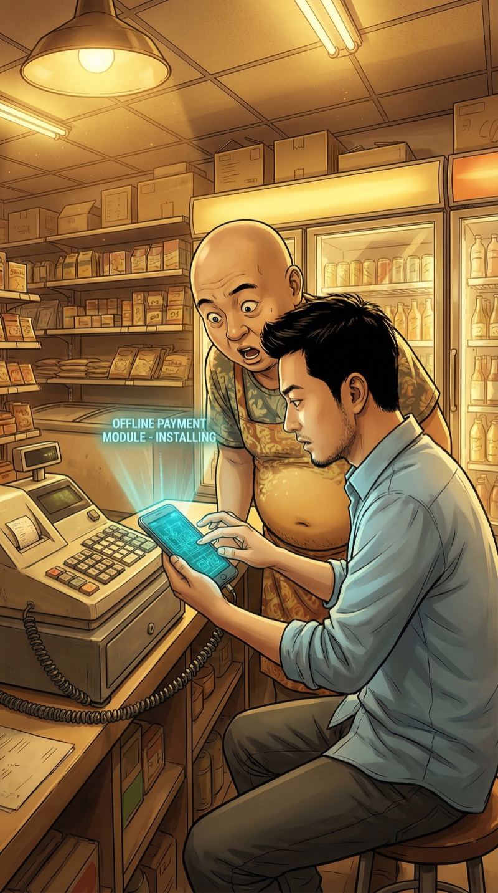
我在收银台后面坐下来，把手机接上老陈的老式收银机。系统展开了「离线支付模块」的蓝图——本质上是一个本地化的记账系统，用简单的数字编码代替扫码支付。
原理不复杂。就像回到了"记账本"时代，只不过用电子化的方式。我的老本行。
老陈趴在我背后看，眼睛瞪得像铜铃。
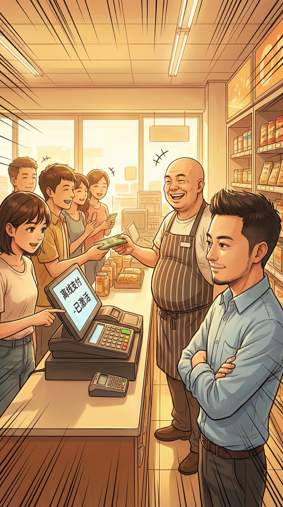
十五分钟后，第一笔交易完成。
一个大姐用我设的编码买了两桶泡面和一瓶水。老陈在本子上记了一笔，系统同步确认。
"能用了！真能用了！"老陈的声音都在发抖。
门口的队伍开始动了。秩序，正在一碗泡面一碗泡面地恢复。
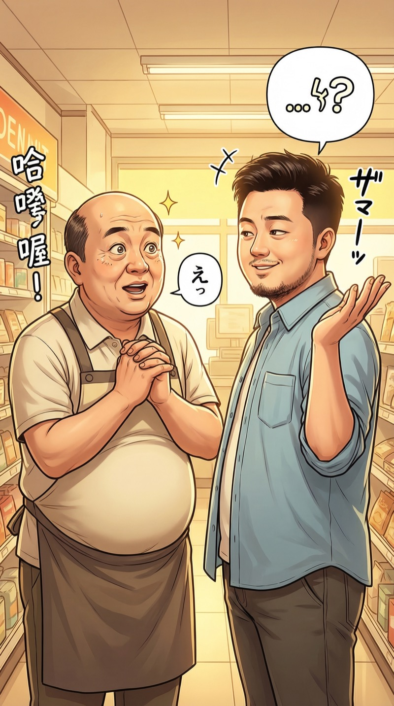
"小伙子！你这个APP末日了还能用？投资人是谁？"
老陈两眼放光，像看到了救世主。
"投资人可能是上帝。"我耸耸肩。
"那上帝眼光不错！"老陈竖起大拇指，"回头你要融资，我投！我这一冰柜的雪糕算不算资产？"
好家伙，末日了第一个投资人是便利店老板。我的创业人生又创新低了。
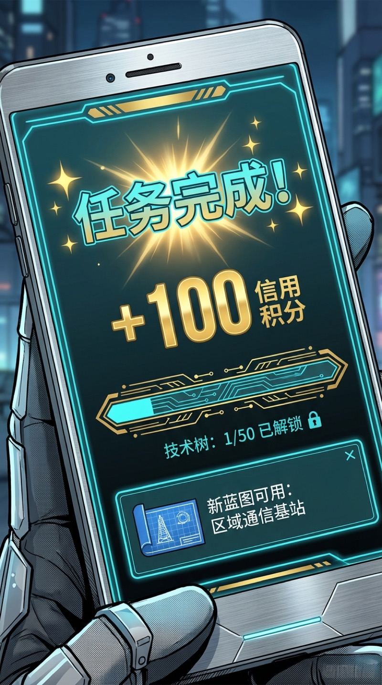
🎉 任务完成！
系统界面弹出金色粒子特效：
+100 信用积分
技术树解锁进度: 1/50
🔓 新蓝图可用：区域通信基站
区域通信基站……如果能恢复通信，整个区域就能联网了。这比修一个便利店的收银机大了一百倍。
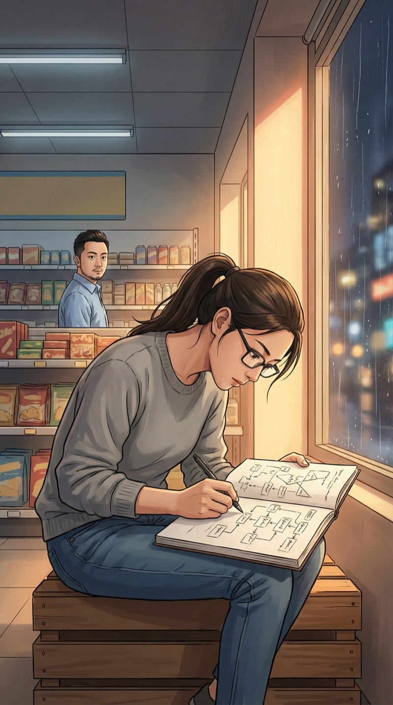
就在我研究新蓝图的时候，余光注意到便利店角落里坐着一个姑娘。
马尾辫，戴眼镜，瘦高个儿，趴在一摞矿泉水箱子上奋笔疾书。她面前摊着一个笔记本，上面画满了流程图和箭头——那个排版方式，我太熟悉了。
产品经理。百分之一百是产品经理。全世界只有产品经理会在末日里画流程图。
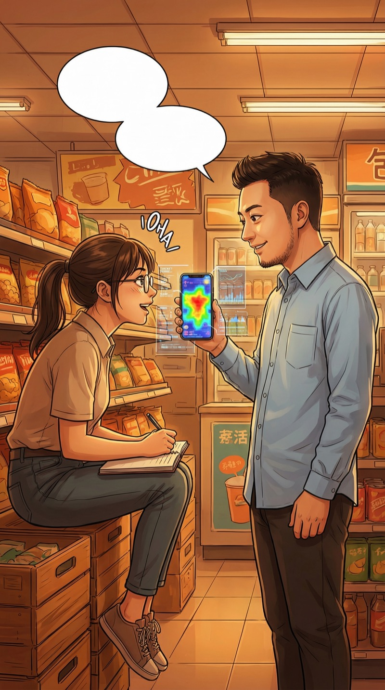
我走过去，把手机屏幕递到她面前。
"你看，这是附近两公里的需求热力图。红色是急需帮助的，黄色是资源充足的。我能看到每个区域的人员密度和需求类型。"
她的眼镜后面，瞳孔瞬间放大。
"……这个数据维度很全。实时更新的？"
钓到了。对数据型人才，用数据说话永远是最快的。
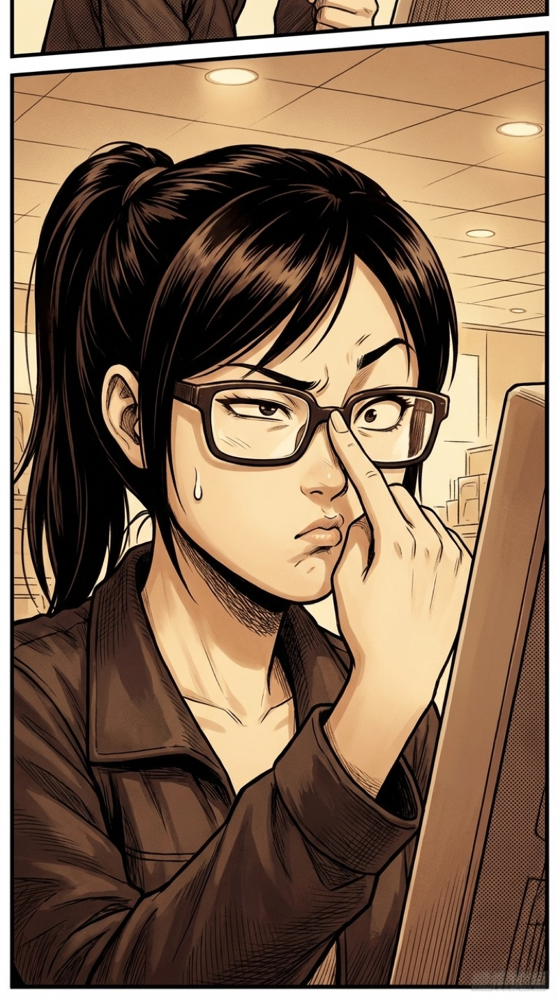
然而接下来的十秒钟让我后悔了。
她推了推眼镜，脸上露出了那种我无比熟悉的表情——产品经理看到不合格产品时的表情。
"这个UI有点丑。信息层级不清楚，关键操作埋得太深。你能提个需求吗？我帮你优化。"
"姐，世界末日了你还提PRD？"
"越是末日越要讲用户体验。"她一脸认真。
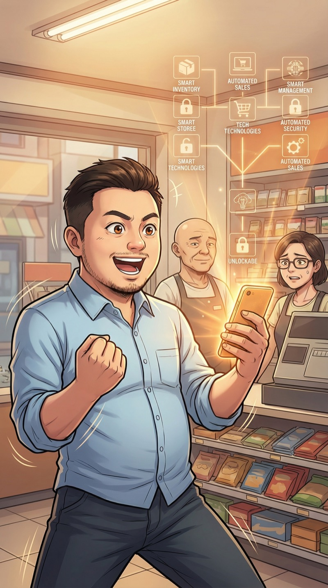
我看着老陈在收银台后面忙得团团转，看着小薇已经开始在笔记本上画系统优化方案，看着门口排队的人脸上终于有了一点安定——
一股熟悉的兴奋感从心底涌上来。
这不就是创业吗？！找到真实需求，做出解决方案，拉起团队，服务用户！只不过这次的"市场"是整个崩塌的文明！
"小薇，你加入吗？"
⚡ 决策点 D2：怎么招募小薇？
A. 展示系统能力，用数据说服——"你看，我能看到整个区域的需求热力图。"
B. 讲情怀——"我们可以一起拯救这个城市。"
C. 直接命令——"我是重启者，你跟我走。"
💭 我选A。画饼这事儿我干过，融资的时候画了三年，没用。真正能打动聪明人的只有一样东西——你有别人没有的实力和信息。用数据说话，用产品说话。
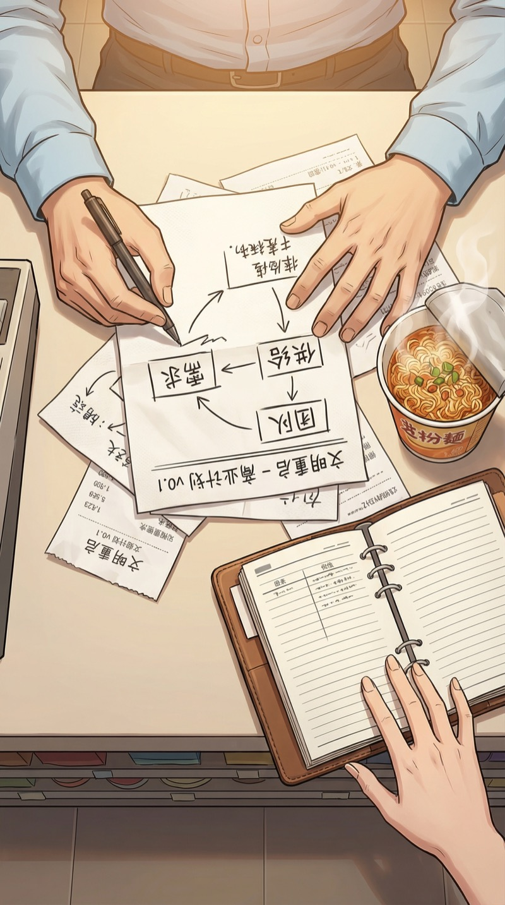
半小时后，老陈的收银台上铺满了餐巾纸。
我在上面画了一份商业计划书——《文明重启 · 商业计划 v0.1》。通信基站为核心产品，老陈的便利店为第一个试点客户，小薇负责产品设计。
"末日了你还写BP？"小薇看着我一脸无语。
"好项目任何时候都需要BP。万一遇到投资人呢？末日也要有梦想。"
"……你的投资人是便利店老板。"
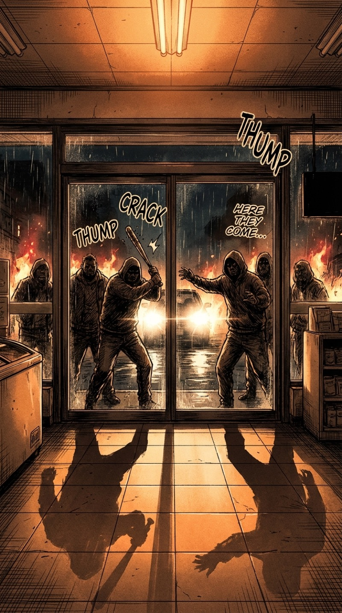
梦想很快被打断了。
一阵嘈杂的脚步声从街道尽头传来。透过便利店的玻璃门，我看到五六个人影正朝这边走来。领头的人手里拿着什么东西——在黑暗中看不清，但绝对不是鲜花。
老陈的脸一下子白了。
"坏了……隔壁几家店都被抢了。"
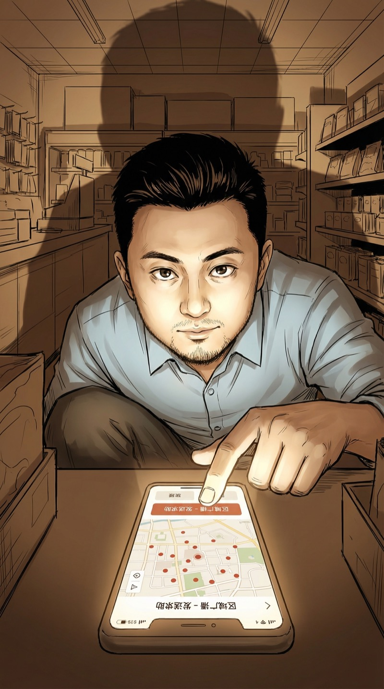
我蹲在柜台后面，拇指悬在手机屏幕上方。
系统工具栏里有一个功能：「区域广播——向半径500米内的设备发送信息」。
五六个人。我们三个。硬碰硬肯定不行。但如果能把附近的居民叫过来……人多了，他们自然就怂了。
⚡ 决策点 D3：怎么对付暴徒？
A. 用「区域广播」召集附近居民，以人数优势威慑——需要5分钟等人到。
B. 直接跟暴徒谈判——"兄弟们，食物我可以给，但咱们得建规则。"
C. 系统有个未测试的「电磁脉冲」功能，一键震慑，但有未知风险。
💭 我选A。创业者不单打独斗——调动资源，用集体力量解决问题。谈判的底气是什么？是身后站着一群人。这个道理，在公司谈合作的时候学过，今天在末日里又用上了。
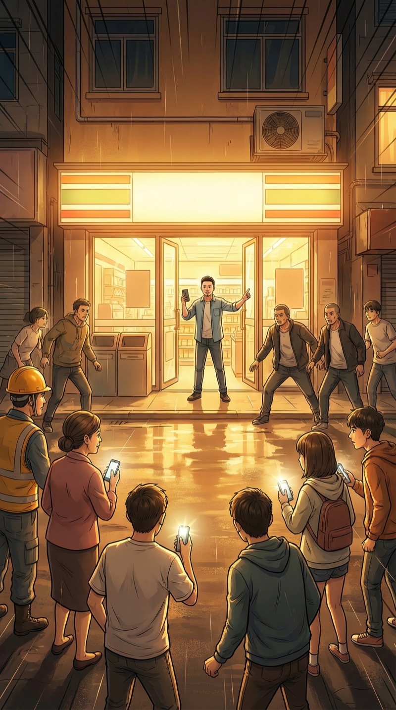
我按下了广播按钮。
三分钟后，第一批人到了。戴安全帽的工人、穿着睡衣的大妈、几个拿着手电的年轻人。五分钟后，便利店门口站了二十多号人。
暴徒们停在十米开外，互相看了看。领头的犹豫了。
乌合之众最怕的不是硬茬——是人多。这个道理不管在董事会还是在街头都一样。
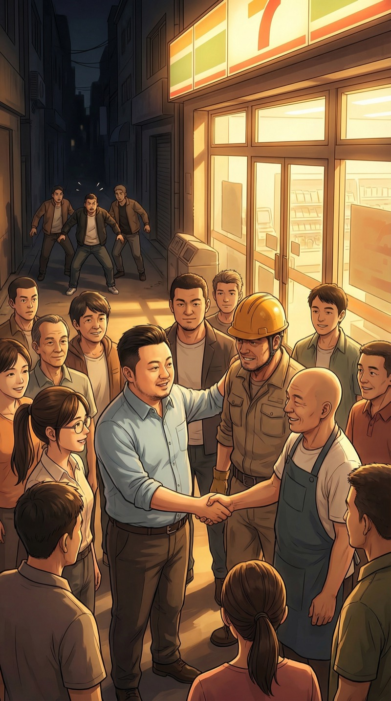
暴徒们骂骂咧咧地走了。
人群里爆发出一阵欢呼。老陈热情地给每个帮忙的人发了一瓶水。那个戴安全帽的工人拍着我的肩膀说：
"小伙子，你那个喇叭挺好使啊！以后有事再喊我们！"
我看着这群素不相识的人在便利店的灯光下笑着聊天，忽然觉得——也许文明没有那么脆弱。它只是暂时断电了，内核还在。
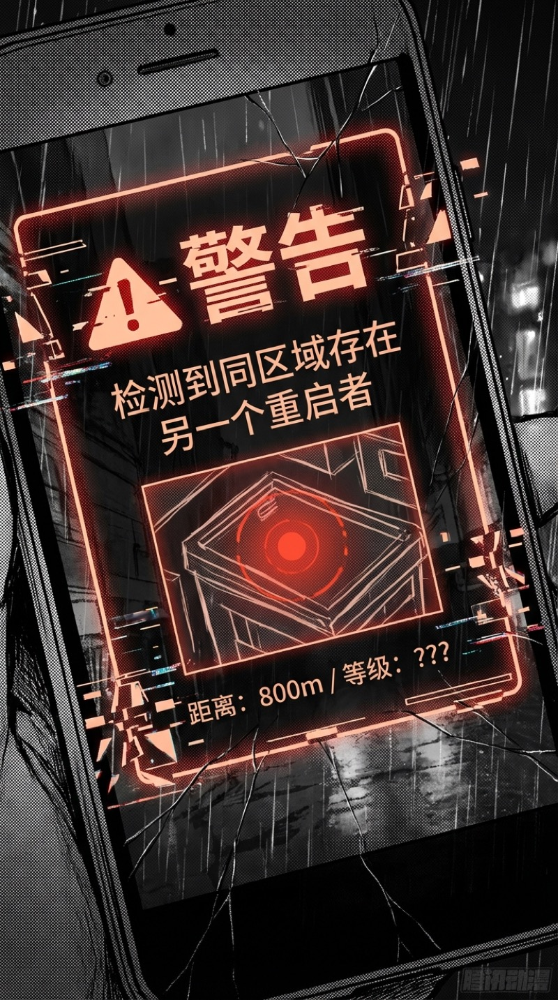
夜深了。小薇靠在货架上打瞌睡，老陈在后面仓库收拾。我坐在门口的台阶上，翻看系统的技术蓝图树。
然后——
⚠️ 警告
屏幕突然变红。青蓝色的UI被刺眼的橙红色警报覆盖，一行大字砸进我的瞳孔——
「检测到同区域存在另一个重启者」
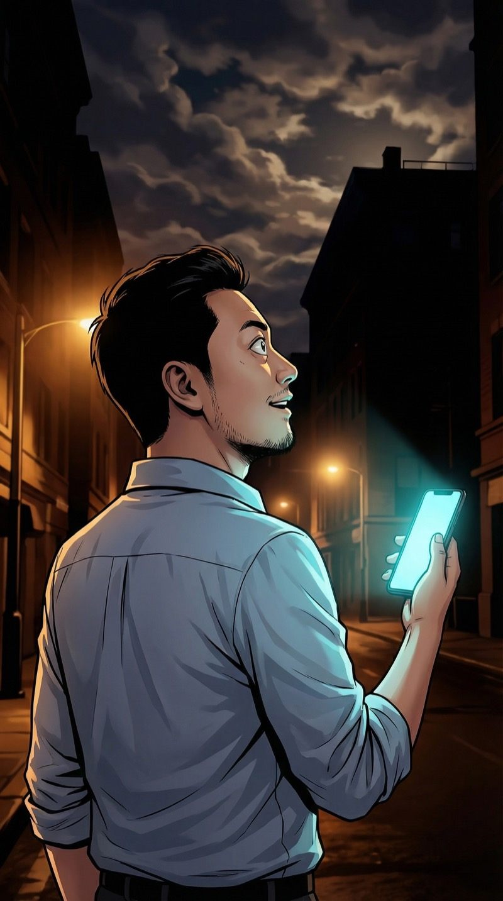
我猛地站起来，顺着系统标注的方向看去。
800米外，一栋写字楼的楼顶。在漆黑的夜空下，那个位置几乎不可能用肉眼看到任何东西。
但我就是感觉到了——那里有人。而且那个人，也在看我。
另一个重启者……这个系统不止选了我一个人。
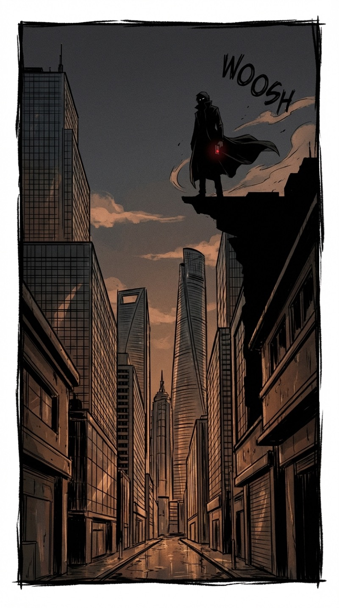
远处楼顶的边缘，一个黑色的身影矗立在夜风中。
长风衣的下摆在风中翻飞。看不清脸，看不清表情。只看到那个身影的手中，也有一点微弱的红光——另一个系统设备。
系统补充了一行信息：
对方系统等级：???（高于你）
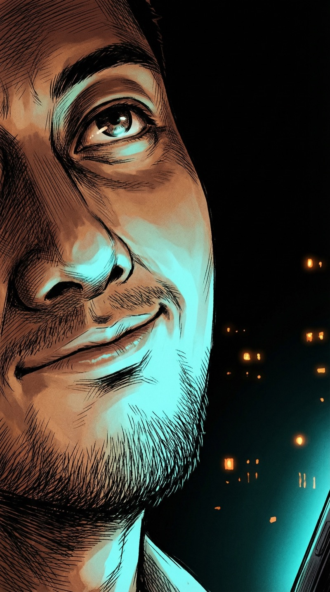
我盯着那个方向看了很久。
然后，嘴角不自觉地翘了起来。
等级比我高？好啊。
创业者最兴奋的事情是什么？不是没有竞争对手——是终于遇到了一个值得认真对待的对手。
"终于，来了个有意思的。"
⚡ 决策点 D4：发现竞争者后，你的态度？
A. 兴奋——终于有对手了。先了解对方，再决定合作还是竞争。
B. 警惕——对方等级比我高，先防御，避免接触。
C. 主动出击——直接去找对方，先发制人。
💭 我选A。怕什么？我是从28楼走下来都不认输的人。信息优先——先了解对手是谁、要什么，再做判断。创业者的直觉告诉我：能走到这一步的人，一定有两把刷子。与其害怕，不如搞清楚他到底是潜在的合伙人，还是真正的竞争对手。
—— 第一章 · 完 ——
系统倒计时：179天23小时
技术树解锁：1/50
信用积分：100
团队成员：3人
未知的重启者在暗处注视着你。
下一章：交锋